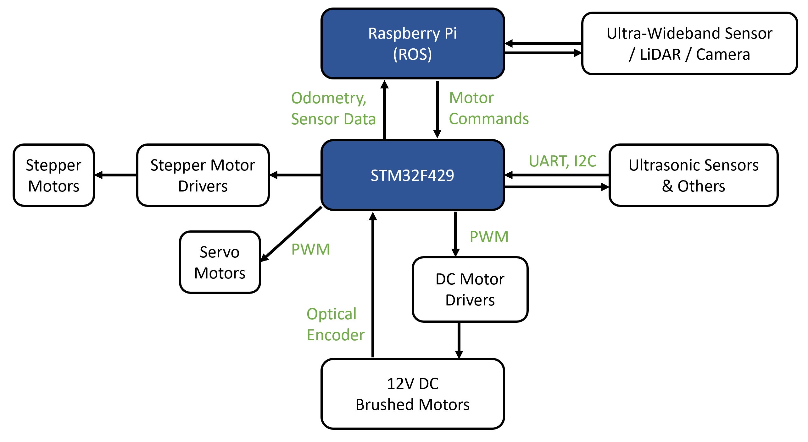
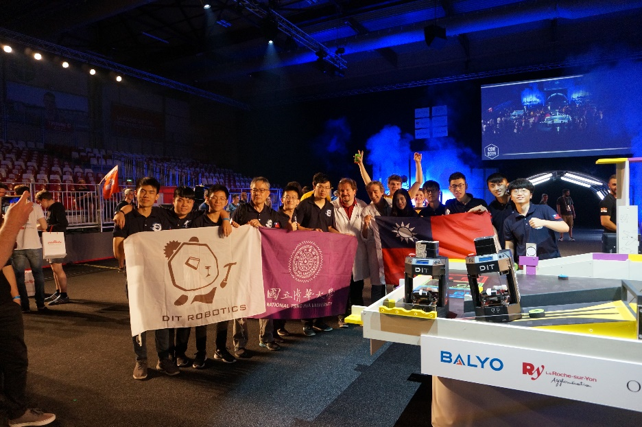

Eurobot Competition
Eurobot is a mobile robot competition with 2 teams playing together, each with 2 robots on the table. I was the leader of our team in 2019, and we won 5th place out of 33 national teams. In this competition, we made 2 robots from scratch. We design the mechanism, manufacture it, lay out the PCB, program it, and test it.

Since there are multiple robots on the table simultaneously, robots need to avoid collision and scramble playing objects to get points without any human controls.
The simplified architecture looks like below. We use Raspberry Pi with ROS for localization, mission planning, and path planning. We program the STM32 to perform PID control on DC motors and handle other sensors' data flow. We also simulated PID parameters and performed system identification in Matlab to ensure it matches our calculation.
We tried several ways of localization methods, including LiDAR with EKF, UWB sensors, Camera with ArUco code. In 2019, we chose to use UWB sensors to perform the localization of our robots. We also use IMU data to improve the odometry data in slippery conditions.
By knowing the fixed beacon position and distances between, robot can calculate its most possible position.
Testing the grabbing mechanism.
Integration testing.
Some real gameplay (Clipped from official streaming, round 3&4).
Full matches can be found here .
Our team and advisor at the competition venue.
